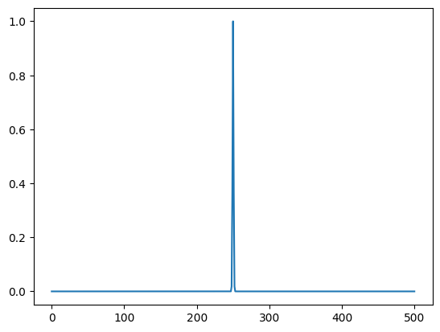

import matplotlib.pyplot as pltImpulse generator
Generator for impulses of different shapes.
Generator
Generator ()
Initialize self. See help(type(self)) for accurate signature.
Gaussian
Gaussian (num_points:int=100)
Initialize self. See help(type(self)) for accurate signature.
y = Gaussian(num_points=501)(mean=0.5, std=0.0000005)
assert len(y) == 501
# plot the gaussian
plt.plot(y)
Gaussian2d
Gaussian2d (num_points_x:int=100, aspect_ratio:float=1.0)
This class generates a 2D gaussian distribution.
| Type | Default | Details | |
|---|---|---|---|
| num_points_x | int | 100 | |
| aspect_ratio | float | 1.0 | aspect ratio of the lengths of the two axes, ly/lx |
nx = 101
aspect_ratio = 0.7
z = Gaussian2d(num_points_x=nx, aspect_ratio=aspect_ratio)(mean=(0.9,1.0), std=0.05)
ny = int(np.floor((nx -1) * aspect_ratio)) + 1
print(z.shape)
print(nx, ny)
assert z.shape == (nx, ny)
# plot the gaussian
plt.imshow(z, vmin=0, vmax=1)(101, 71)
101 71NoiseBurst
NoiseBurst (num_points:int=100)
Initialize self. See help(type(self)) for accurate signature.
rng = np.random.default_rng(42)
y = NoiseBurst(num_points=500)(rng, noise_range=[0, 1], burst_mean=0.5, burst_std=0.05)
assert len(y) == 500Noise
Noise (num_points:int=100)
Initialize self. See help(type(self)) for accurate signature.
Noise2d
Noise2d (num_points_x:int=100, aspect_ratio:float=1.0)
Initialize self. See help(type(self)) for accurate signature.
| Type | Default | Details | |
|---|---|---|---|
| num_points_x | int | 100 | |
| aspect_ratio | float | 1.0 | aspect ratio of the lengths of the two axes, ly/lx |
rng = np.random.default_rng(42)
z = Noise2d(num_points_x=100, aspect_ratio=0.7)(rng, noise_range=[0, 1])
assert z.shape == (100, 70)
plt.imshow(z, vmin=0, vmax=1)SineMode
SineMode (num_points:int=100)
Initialize self. See help(type(self)) for accurate signature.
generate_initial_condition
generate_initial_condition (rng:numpy.random._generator.Generator=Genera tor(PCG64) at 0x126827CA0, generator:__main__ .Generator=<__main__.Gaussian object at 0x126b48670>, ic_type:str='pluck', ic_max_amplitude:float=1.0, ic_min_amplitude:float=0.0, ic_amplitude_random:bool=False, ic_sine_k:int=1)
| Type | Default | Details | |
|---|---|---|---|
| rng | Generator | Generator(PCG64) | |
| generator | Generator | <main.Gaussian object at 0x126b48670> | |
| ic_type | str | pluck | “pluck” or “hammer” |
| ic_max_amplitude | float | 1.0 | Amplitude of the initial condition, when ic_amplitude_random is True, this is the upper bound |
| ic_min_amplitude | float | 0.0 | only used when ic_amplitude_random is True |
| ic_amplitude_random | bool | False | If True, the amplitude is chosen randomly between ic_min_amplitude and ic_max_amplitude |
| ic_sine_k | int | 1 | only used when ic_type is “sine” |
| Returns | Tuple | a tuple of position and velocity |
make_pluck_hammer
make_pluck_hammer (y:numpy.ndarray, ic_type:str='pluck')
| Type | Default | Details | |
|---|---|---|---|
| y | ndarray | ||
| ic_type | str | pluck | “pluck” or “hammer” |
| Returns | Tuple |
rng = np.random.default_rng()
ic_type = "pluck"
ic_max_amplitude = 0.7
ic_min_amplitude = 0.1
ic_amplitude_random = False
num_points = 500
u, v = generate_initial_condition(
rng,
SineMode(num_points=num_points),
ic_type=ic_type,
ic_max_amplitude=ic_max_amplitude,
ic_min_amplitude=ic_min_amplitude,
ic_amplitude_random=ic_amplitude_random,
ic_sine_k=10,
)
if ic_type == "pluck":
assert np.all(v == 0)
if ic_amplitude_random:
assert np.max(np.abs(u)) <= ic_max_amplitude
assert np.max(np.abs(u)) >= ic_min_amplitude
else:
assert np.max(np.abs(u)) == ic_max_amplitude
elif ic_type == "hammer":
assert np.all(u == 0)
if ic_amplitude_random:
assert np.max(np.abs(v)) <= ic_max_amplitude
assert np.max(np.abs(v)) >= ic_min_amplitude
else:
assert np.max(np.abs(v)) == ic_max_amplitude
# Plot the initial conditions
fig, ax = plt.subplots()
ax.plot(u)
ax.plot(v)# Test the 2d functions
rng = np.random.default_rng()
ic_type = "pluck"
ic_max_amplitude = 0.7
ic_min_amplitude = 0.1
ic_amplitude_random = False
num_points = 500
u, v = generate_initial_condition(
rng,
Noise2d(num_points_x=num_points, aspect_ratio=0.7),
ic_type=ic_type,
ic_max_amplitude=ic_max_amplitude,
ic_min_amplitude=ic_min_amplitude,
ic_amplitude_random=ic_amplitude_random,
)
if ic_type == "pluck":
assert np.all(v == 0)
if ic_amplitude_random:
assert np.max(np.abs(u)) <= ic_max_amplitude
assert np.max(np.abs(u)) >= ic_min_amplitude
else:
assert np.allclose(np.max(np.abs(u)), ic_max_amplitude)
elif ic_type == "hammer":
assert np.all(u == 0)
if ic_amplitude_random:
assert np.max(np.abs(v)) <= ic_max_amplitude
assert np.max(np.abs(v)) >= ic_min_amplitude
else:
assert np.allclose(np.max(np.abs(v)), ic_max_amplitude)
# Plot the initial conditions
fig, ax = plt.subplots(1,2)
ax[0].imshow(u)
ax[1].imshow(v)print(np.max(np.abs(u)))0.7raised_cosine_2d
raised_cosine_2d (grid_x, grid_y, c0:float=0.5, x_0:float=0.1, y_0:float=0.1, width:float=0.1, excitation_type:str='pluck')
| Type | Default | Details | |
|---|---|---|---|
| grid_x | number of points along the x direction | ||
| grid_y | number of points along the y direction | ||
| c0 | float | 0.5 | peak amplitude in newtons |
| x_0 | float | 0.1 | center of the excitation in x direction |
| y_0 | float | 0.1 | center of the excitation in y direction |
| width | float | 0.1 | width of the excitation in meters |
| excitation_type | str | pluck |
raised_cosine_string
raised_cosine_string (excitation_type:str='pluck', c0:float=0.5, x_0:float=0.1, width:float=0.1, length:float=1.0, grid_points:int=101)
| Type | Default | Details | |
|---|---|---|---|
| excitation_type | str | pluck | |
| c0 | float | 0.5 | peak amplitude in newtons |
| x_0 | float | 0.1 | center of the excitation in meters |
| width | float | 0.1 | width of the excitation in meters |
| length | float | 1.0 | total length of the string in meters |
| grid_points | int | 101 | number of points along the string |
exc = raised_cosine_string(
excitation_type="pluck",
c0=0.7,
x_0=0,
width=0.1,
length=1.0,
grid_points=101,
)
plt.plot(exc)def ricker(dt, pt):
nt = int(2 * pt / dt)
c = np.zeros(nt)
t0 = pt / dt
a_ricker = 4 / pt
for it in range(0, nt):
t = ((it + 1) - t0) * dt
c[it] = -2 * a_ricker * t * np.exp(-(a_ricker * t) ** 2)
return cdt = 1/44100
T0 = 1/200
tmp = ricker(dt, T0)
tmp = np.diff(tmp)
plt.plot(tmp)
def gaus2d(
x: np.ndarray,
y: np.ndarray,
A: float = 1, # amplitude
mx: float = 0, # center x
my: float = 0, # center y
sx: float = 1, # sigma x (width in x direction)
sy: float = 1, # sigma y (width in y direction)
):
# norm = 1.0 / (2.0 * np.pi * sx * sy)
gaussian = np.exp(
-((x - mx) ** 2.0 / (2.0 * sx**2.0) + (y - my) ** 2.0 / (2.0 * sy**2.0))
)
return A * gaussian
y = np.linspace(0, 50)
x = np.linspace(0, 50)
x, y = np.meshgrid(x, y) # get 2D variables instead of 1D
z = gaus2d(x, y, 2, 5, 5)
print(z.max())1.9792833848731148create_pluck_modal
create_pluck_modal (wavenumbers:numpy.ndarray, xe:float=0.28, hi:float=0.03, length:float=1.0)
Create a pluck excitation for a string with a given length and pluck position. The pluck is modeled in the modal domain. This function is based on the function https://github.com/julian-parker/DAFX22_FNO.
| Type | Default | Details | |
|---|---|---|---|
| wavenumbers | ndarray | The wavenumbers of the modes. | |
| xe | float | 0.28 | pluck position in m |
| hi | float | 0.03 | initial deflection in m |
| length | float | 1.0 | length of the string in m |
| Returns | ndarray | The pluck excitation in the modal domain. |